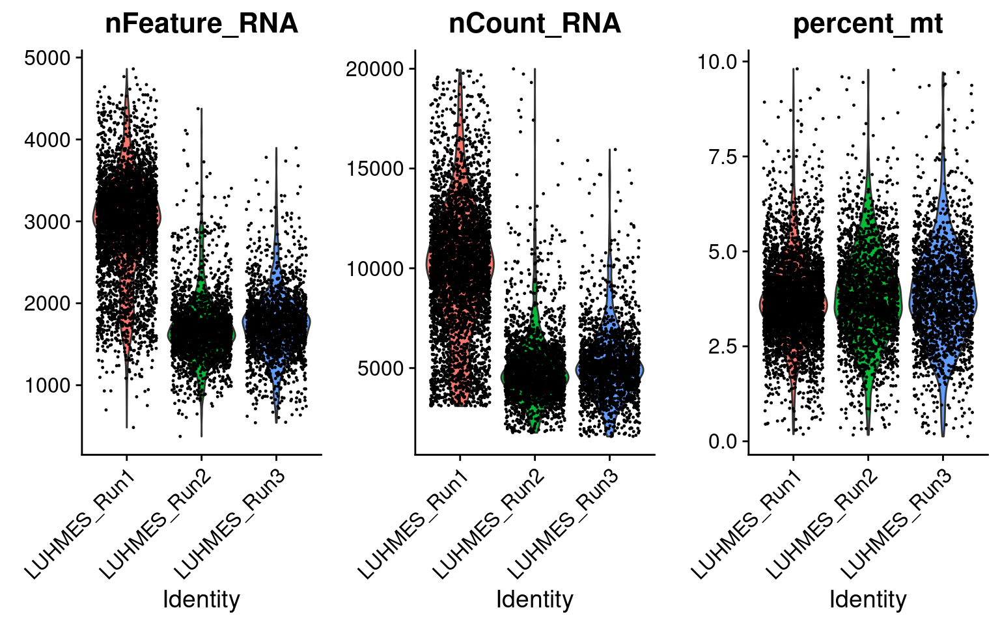
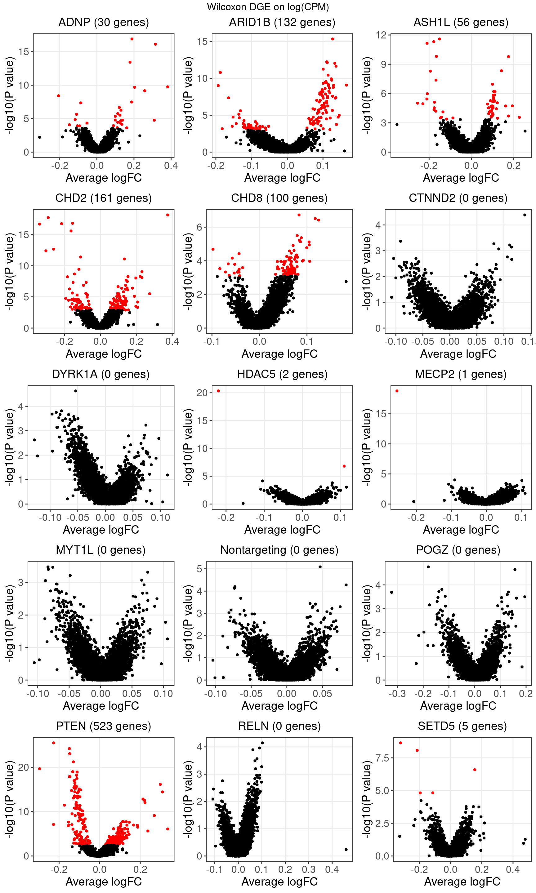

1 Data Settings
CROP-seq data are from this paper: High-throughput single-cell functional elucidation of neurodevelopmental disease-associated genes reveals convergent mechanisms altering neuronal differentiation, GEO accession: GSE142078.
Perturbations:
CRISPR knock-down of 14 autism spectrum disorder (ASD)–associated genes (3 gRNAs per gene) + 5 non-targeting gRNAs.
Cells:
Lund human mesencephalic (LUHMES) neural progenitor cell line.
Cells were sequenced in 3 batches.
2 scRNA-seq data
2.1 Preprocessing
There are 8708 cells with a single type of gRNA readout using the quality control criteria of % mitochondria gene expression < 10 and total UMI count < 2e+4.

Only genes detected in > 10% of cells were kept.
Seurat “LogNormalize”: log(count per \(10^4\) + 1).
Batch effect, (unique UMI count,) library size, and mitochondria percentage were all corrected for.
2.2 UMAP representation after correction
Batch effect:
No batch effects were apparent on global clustering after correction.

Cell cycle effect (colored by the mean expression of signature genes at the corresponding cell cycle stage): 
Expression patterns of neuronal marker genes: 
Most cells were postmitotic as assessed by the absence of proliferation marker TOP2A.
But there is heterogeneity in the progression of differentiation at the single-cell level.
3 CRISPR Perturbations

3.1 Distribution of Knock-down Perturbations

3.2 Wilcoxon Differential Expression Test
Number of genes that passed FDR < 0.05 under each perturbation:| KO | ADNP | ARID1B | ASH1L | CHD2 | CHD8 |
| DE_genes | 30 | 132 | 56 | 161 | 100 |
| KO | CTNND2 | DYRK1A | HDAC5 | MECP2 | MYT1L |
| DE_genes | 0 | 0 | 2 | 1 | 0 |
| KO | Nontargeting | POGZ | PTEN | RELN | SETD5 |
| DE_genes | 0 | 0 | 523 | 0 | 5 |
